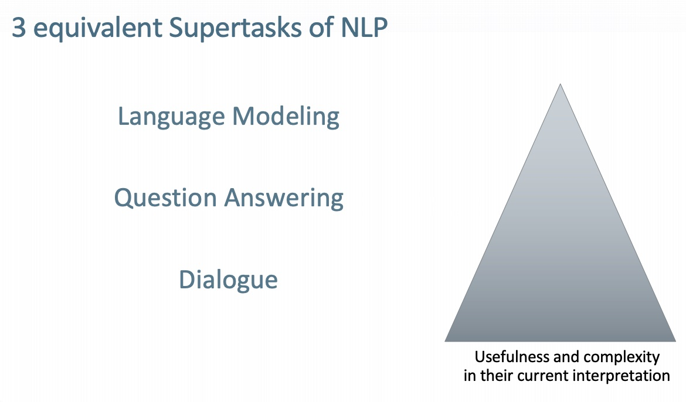
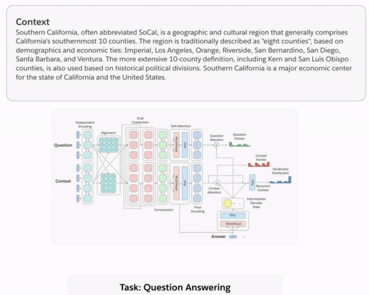
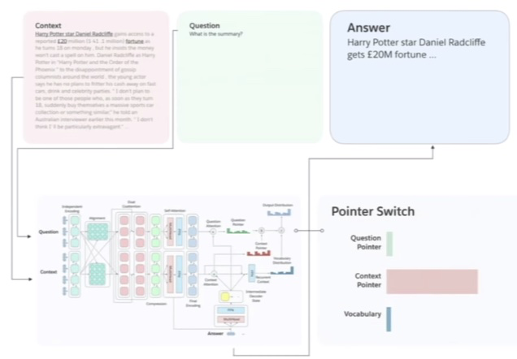
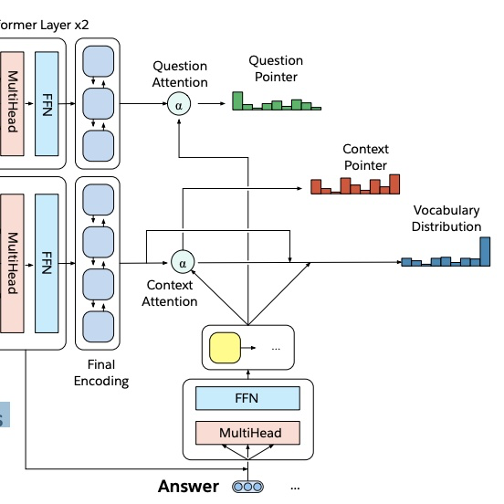
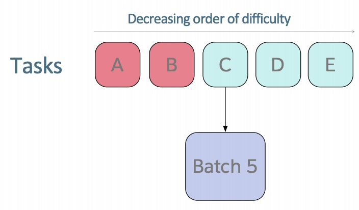
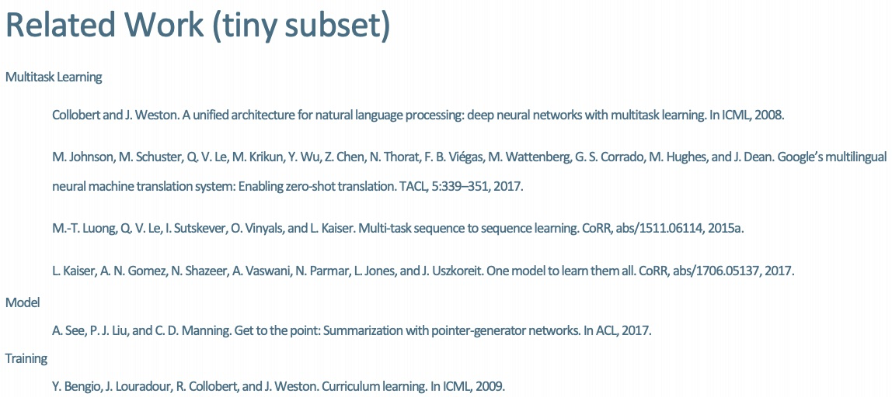

17 Multitask Learning
Lecture 17 Multitask Learning¶
The Natural Language Decathlon: Multitask Learning as Question Answering

The Limits of Single-task Learning
- 鉴于{dataset，task，model，metric}，近年来性能得到了很大改善
- 只要 |\text{dataset}| > 1000 \times C ，我们就可以得到当前的最优结果 (C是输出类别的个数)
- 对于更一般的 Al，我们需要在单个模型中继续学习
- 模型通常从随机开始，仅部分预训练

Pre-training and sharing knowledge is great!

Why has weight & model sharing not happened as much in NLP?
- NLP需要多种推理：逻辑，语言，情感，视觉，++
- 需要短期和长期记忆
- NLP被分为中间任务和单独任务以取得进展
- 在每个社区中追逐基准
- 一个无人监督的任务可以解决所有问题吗？不可以
- 语言显然需要监督
Why a unified multi-task model for NLP?
- 多任务学习是一般NLP系统的阻碍
- 统一模型可以决定如何转移知识（领域适应，权重分享，转移和零射击学习）
- 统一的多任务模型可以
- 更容易适应新任务
- 简化部署到生产的时间
- 降低标准，让更多人解决新任务
- 潜在地转向持续学习
How to express many NLP tasks in the same framework?
- 序列标记
- 命名实体识别，aspect specific sentiment
- 文字分类
- 对话状态跟踪，情绪分类
- Seq2seq
- 机器翻译，总结，问答

The Natural Language Decathlon (decaNLP)

- 把 10 项不同的任务都写成了 QA 的形式，进行训练与测试
Multitask Learning as Question Answering

- Meta-Supervised learning 元监督学习 ：\text { From }\{x, y\} \text { to }\{x, t, y\}(t \text { is the task })
- 使用问题 q 作为任务 t 的自然描述，以使模型使用语言信息来连接任务
- y 是 q 的答案，x 是回答 q 所必需的上下文
Designing a model for decaNLP
需求：
- 没有任务特定的模块或参数，因为我们假设任务ID是未提供的
- 必须能够在内部进行调整以执行不同的任务
- 应该为看不见的任务留下零射击推断的可能性
A Multitask Question Answering Network for decaNLP


- 以一段上下文开始
- 问一个问题
- 一次生成答案的一个单词，通过
- 指向上下文
- 指向问题
- 或者从额外的词汇表中选择一个单词
- 每个输出单词的指针切换都在这三个选项中切换
Multitask Question Answering Network (MQAN)

- For code and leaderboard see www.decaNLP.com
- 固定的 GloVe 词嵌入 + 字符级的 n-gram 嵌入 \to Linear \to Shared BiLSTM with skip connection
- 从一个序列到另一个序列的注意力总结，并通过跳过连接再次返回
- 分离BiLSTM以减少维数，两个变压器层，另一个BiLSTM
- 自回归解码器使用固定的 GloVe 和字符 n-gram 嵌入，两个变压器层和一个LSTM层来参加编码器最后三层的输出
- LSTM解码器状态用于计算上下文与问题中的被用作指针注意力分布问题
- 
- 对上下文和问题的关注会影响两个**开关**：
- gamma决定是复制还是从外部词汇表中选择
- lambda决定是从上下文还是在问题中复制


- S2S 是 seq2seq
- +SelfAtt = plus self attention
- +CoAtt = plus coattention
- +QPtr = plus question pointer == MQAN
- Transformer 层在单任务和多任务设置中有 收益
- 多任务训练一开始会获得很差的效果（干扰和遗忘），但是如果顺序训练这些任务，将很快就会好起来
- QA和SRL有很强的关联性
- 指向问题至关重要
- 多任务处理有助于实现零射击
- 组合的单任务模型和单个多任务模型之间存在差距
Training Strategies: Fully Joint
简单的全联合训练策略


Training Strategies: Anti-Curriculum Pre-training



- 困难：在单任务设置中收敛多少次迭代
-
带红色的任务：预训练阶段包含的任务
-
QA 的 Anti-curriculum 反课程预训练改进了完全联合培训
- 但MT仍然很糟糕
Closing the Gap: Some Recent Experiments


Where MQAN Points

- 答案从上下文或问题中正确的复制
- 没有混淆模型应该执行哪个任务或使用哪个输出空间
Pretraining on decaNLP improves final performance
- 例如额外的 IWSLT language pairs
- 或者是新的类似 NER 的任务

Zero-Shot Domain Adaptation of pretrained MQAN:
- 在 Amazon and Yelp reviews 上获得了 80% 的 精确率
- 在 SNLI 上获得了 62% （参数微调的版本获得了 87% 的精确率，比使用随机初始化的高 2%）
Zero-Shot Classification
- 问题指针使得我们可以处理问题的改变（例如，将标签转换为满意/支持和消极/悲伤/不支持）而无需任何额外的微调
- 使模型无需训练即可响应新任务

decaNLP: A Benchmark for Generalized NLP
- 为多个NLP任务训练单问题回答模型
- 解决方案
- 更一般的语言理解
- 多任务学习
- 领域适应
- 迁移学习
- 权重分享，预训练，微调（对于NLP的ImageNet-CNN？）
- 零射击学习


Reference¶
以下是学习本课程时的可用参考书籍：
《基于深度学习的自然语言处理》 （车万翔老师等翻译）
以下是整理笔记的过程中参考的博客：
斯坦福CS224N深度学习自然语言处理2019冬学习笔记目录 (课件核心内容的提炼，并包含作者的见解与建议)
斯坦福大学 CS224n自然语言处理与深度学习笔记汇总 这是针对note部分的翻译